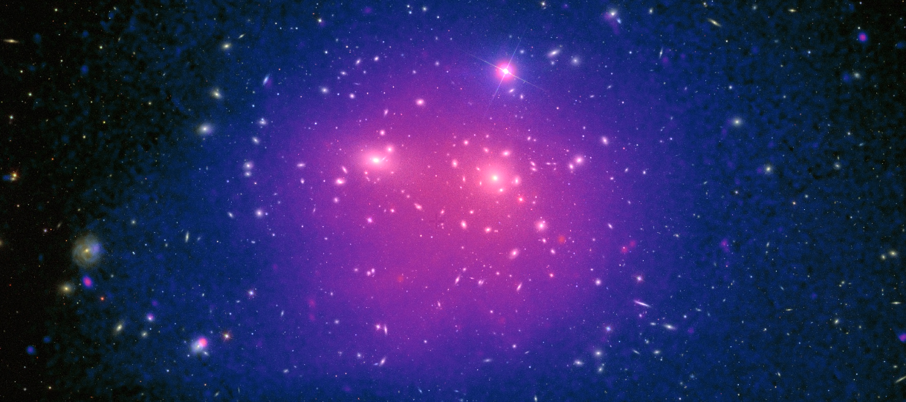
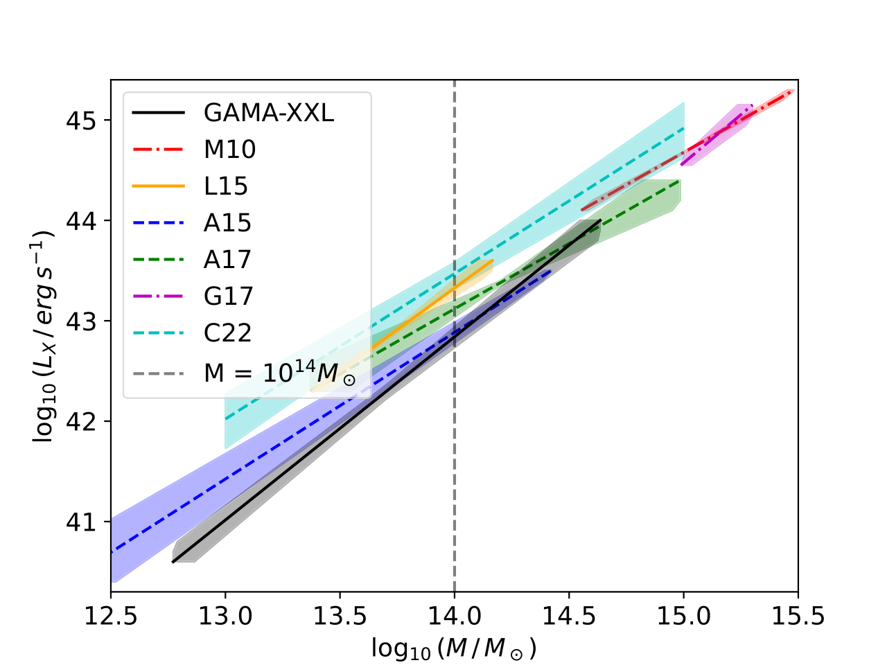

Page under construction
Galaxy Clusters
Galaxy clusters are the largest gravitationally bound structures in the universe. Galaxy clusters comprise tens to thousands of galaxies plus an X-ray emitting intra-cluster medium (ICM) bound by a dark-matter-dominated gravitational potential well. My research involves the statistical analysis of galaxy clusters using optical and X-ray detection methods.

IMAGE CREDIT: ESA/XMM-Newton/SDSS/J. Sanders et al. 2019
Optical Detections
Early galaxy cluster catalogues were produced by visually identifying overdensities of galaxies on optical survey plates: notably Abell (1958) and Zwicky (1961). Quantitative, reproducible catalogues followed when researchers began constructing lists using galaxy positions and redshifts rather than by-eye counts. More recently, the fact that galaxies located in the cores of galaxy clusters tend to have older stellar populations and therefore form a tight red sequence in colour–magnitude space, led to red-sequence based cluster-finding algorithms (e.g. Gladders & Yee 2000), which were used to build surveys such as the Red-Sequence Cluster Survey and later photometric cluster catalogues. The red-sequence approach was scaled up and applied to large imaging surveys (for example, cluster detection in the Sloan Digital Sky Survey using brightest-cluster-galaxy / red-sequence approaches such as the maxBCG catalogue (Koester et al. 2007)), enabling large, well-characterised photometric cluster samples out to moderate redshift. Galaxy redshift surveys are also used to find galaxy clusters by applying a clustering or friends-of-friends (FoF) algorithm such as that used by Robotham et al. 2011 for the GAMA survey. These methods reduce the impact of projection effects in photometric surveys, but at greater observational cost.
Scaling Relations
Assuming galaxy groups form solely through gravitational mergers it is expected that all clusters should be scaled versions of each other. The assumption of a self-similar model Kaiser (1986) predicts power-law scaling relations between cluster properties such as luminosity, temperature and mass. When measured observationally, these scaling relations are generally found to differ from self similar expectations. This is most prominent for low mass systems, while some studies of high mass clusters do find self-similar behaviour in some scaling relations. The departures from self-similarity are most noticeable for the relations which are dependant on density and distribution of ICM (e.g. luminosity, gas mass). These properties are found to show steeper correlation with mass and temperature than expected. This behaviour is broadly understood to be a result of non-gravitational processes that are ignored by the self-similar model. These processes (e.g., active galactic nuclei (AGN) feedback, cooling, star formation, supernovae) are expected to disproportionately affect the properties of the ICM in lower mass systems where the gravitational potential well is shallower.
The XXL Survey LIV. X-ray luminosity function and luminosity–mass relation of optically selected galaxy groups
In Wood et al (2025), I investigated feedback processes and selection biases in galaxy group and cluster surveys by applying forced aperture photometry to XMM-Newton data for an optically selected sample. This work took advantage of the overlapping regions between the XXL X-ray survey and the GAMA spectroscopic survey to measure the X-ray Luminosity Function and Luminosity-Mass Relation of an optically selected sample of galaxy groups and clusters. The slope of the Luminosity-Mass relation was found to be steeper than self-similar predictions, which when compared other measurements of the LM relation indicates the influence of non-gravitational processes such as AGN feedback. The normalisation of the LM relation was found to be lower than previous studies of X-ray selected samples, but in agreement with other optically selected samples. This is consistent with the potential impact of selection effects in X-ray selected samples. Our approach can be translated to eROSITA data using multiwavelength surveys to constrain the X-ray properties of galaxy groups in the limits of high redshift and low mass.

X-Ray Luminosity - Mass scaling relation of the GAMA-XXL LM relation found in Wood et al (2025) with comparison to other X-ray selected (M10, L15, G17, C22) and optically selected (A15, A17) works.